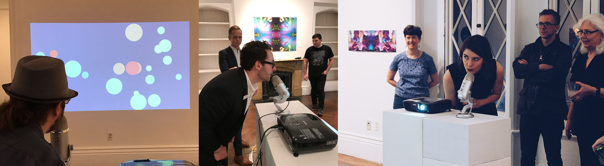

Call & Response is an interactive installation that translates audio input from gallery participants into projected visuals.
Call & Response was born from a shared love of music and technology between myself,
Andrew Allred and Chris Wininger. We debuted this project earlier this year
at the Lexington Art League
as a part of the Expanding Fields Exhibition.
For this installation, a microphone is placed in front of a projection
onto a blank white wall. The microphone detects ambient sounds and visuals,
while showing a prompt that invites the participant to make more intentional
sounds into the microphone. Once a sound is made into the mic, that sound is processed
into a visual that’s projected onto the screen. As the sounds change, the
visuals change in response.
For example, when the microphone detects talking, the default white bubbles begin
to grow. As the microphone
detects tonal sounds, like melodic speaking or singing, the bubbles begin to
change into vibrant colors. As any of these sounds are sustained, the bubbles
continue to grow, encouraging more interaction. Finally, snapping and clapping sounds
change the color scheme completely. Read Chris' excellent write-up on the technical
side here.
We wanted to use the gallery space to not only invite people to explore the
relationship between seen and heard but to challenge the assumption that
galleries are for observation only. Instead, we proposed that the gallery
is a space to explore, make noise, to project your own interpretations
straight onto the blank wall.

We were thrilled to see this project come to life at Lexington Art League, and
to observe how it was used by gallery-goers. Originally we had
intended for it to coax people into singing, but we found that people were most comfortable
clapping and snapping into the microphone, and that the resulting color scheme change was
the most satisfying interaction. We look forward to iterating on this project and
making it even more immersive!
For another view of Call & Response, here's me performing with Call & Response
at Gray Area Center for the Arts' Spring 2017 UNSEEN Series: